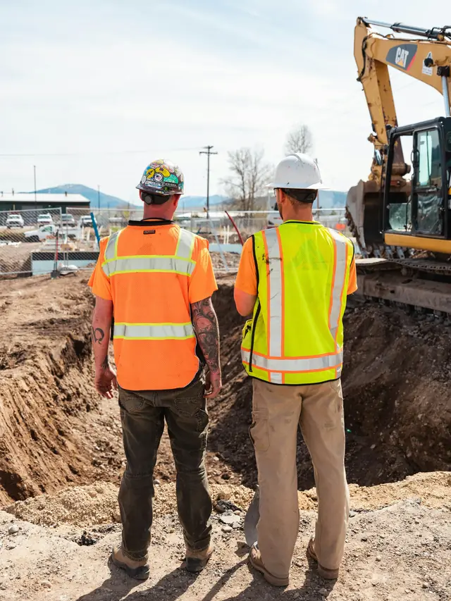

Goed grondwerk bepaalt of de rest van het project soepel loopt. Onze grondwerkers werken nauw samen met de machinist, houden de sleuf veilig en werken op maat en peil.
Wat onze mensen doen
- Sleuven en bouwputten ontgraven, samen met de machinist
- Kabels en leidingen handmatig vrijgraven aan de hand van KLIC-tekeningen
- Proefsleuven graven en bestaande leidingen lokaliseren
- Aanvullen en verdichten in lagen
- Sleufbekisting plaatsen en de werkplek op orde houden
Profielen
- Grondwerker
- Allround grondwerker
- Hulpmachinist
Kennis en papieren
- VCA Basis of VCA VOL
- Zorgvuldig graven rond kabels en leidingen
- Ervaring met sleufbekisting en grondkerende constructies